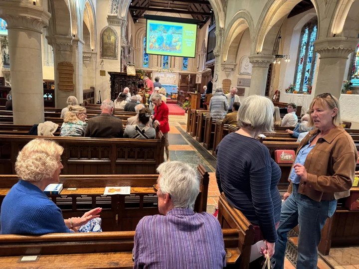
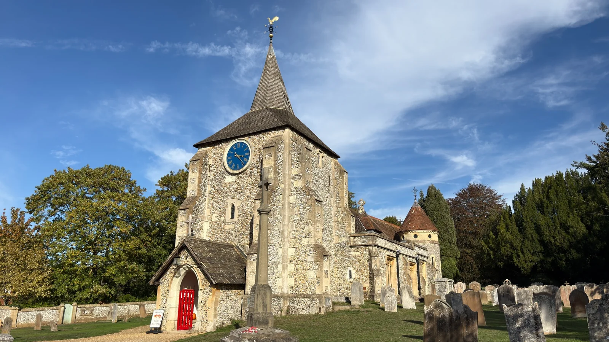
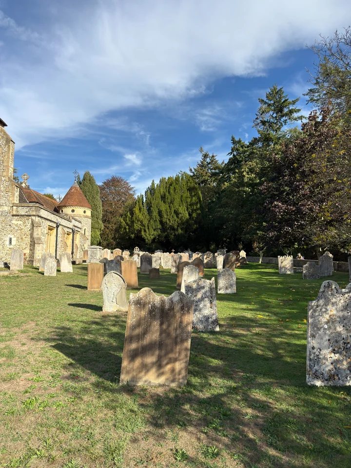
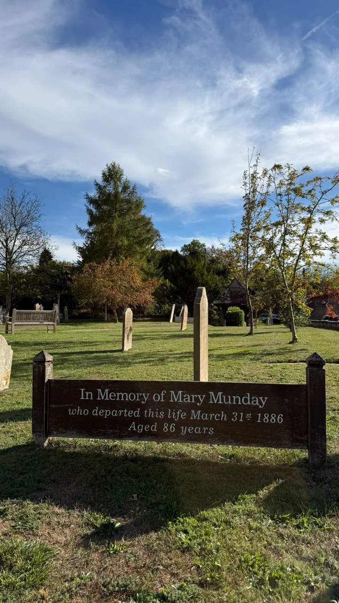

Worship and Services
Join us for Sunday services and special services throughout the year.
Our services
Mickleham & Westhumble
A welcoming church community serving the villages of Mickleham and Westhumble.
Who we are
Our parish brings together St Michael and All Angels in Mickleham and the Chapel of Ease in Westhumble. We are part of the Church of England and the United Benefice of Leatherhead and Mickleham, within the Diocese of Guildford.
People from the villages and nearby towns form a friendly church community. We seek to care for one another through worship, spiritual support, practical help and encouragement. All are welcome to visit or join in parish life.
Meet our two churches“Inspired by God’s love we seek to grow spiritually, make Jesus Christ known and be a loving, inclusive and welcoming church, at the heart of the community.”
Our parish vision

Join us for Sunday services and special services throughout the year.
Our servicesSt Michael & All Angels, Mickleham and the Chapel of Ease, Westhumble.
Explore our churches
